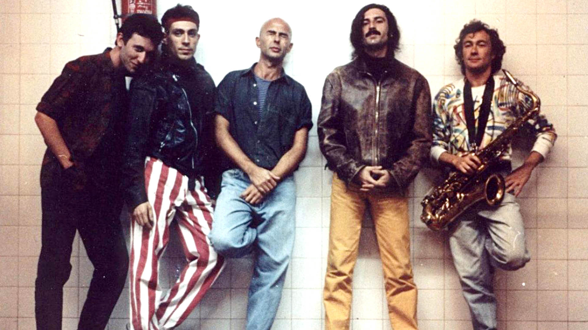

Ultimo recital de los redondos:
Se ofreció el 4 de agosto de 2001, en Córdoba. Fue un espectáculo de emociones mezcladas, sin saber que se trataba de un adiós definitivo y con una trastienda agitada. 20 años es un montón y nada. Todo depende de la estela despedida por el hecho que se produjo por entonces. En el caso del show de Patricio Rey y sus Redonditos de Ricota en el Chateau Carreras, ofrecido el sábado 4 de agosto de 2001, la distancia temporal se reduce a cero.
Introduccion rapida:
Patricio Rey y sus Redonditos de Ricota, también conocidos como Los Redondos, fue una banda de rock alternativo , formada en La Plata en el año 1976, e integrada, en su mayor parte, por el Indio Solari (voz, composición), Skay Beilinson (guitarra, composición),Semilla Bucciarelli (bajo), Walter Sidotti (batería) y Sergio Dawi (saxofón, armónica y piano). Es considerada como una de las bandas más importantes e influyentes de la historia del rock nacional en Argentina y Latinoamérica. para saber mas te recomendamos ir a Sobre Ellos
\